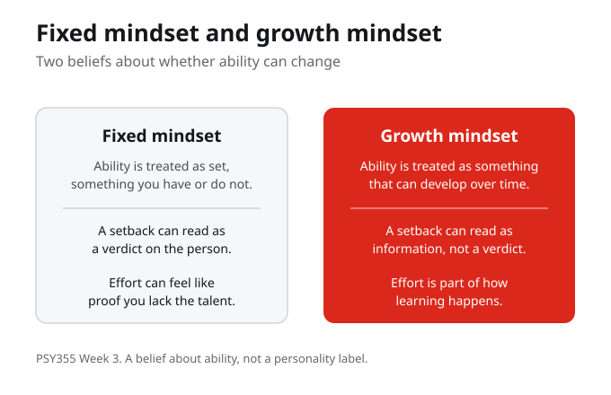
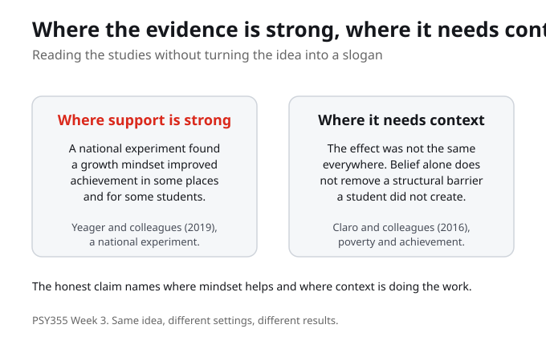

What Do You Know?
1. A growth mindset, as this week uses it, is best described as:
2. A fixed mindset treats ability as:
3. The central question for this week is:
4. The national experiment by Yeager and colleagues found that a growth mindset:
5. Claro and colleagues studied growth mindset alongside:
6. A key caution this week is that a growth mindset must not:
7. The week's practice activity asks students to:
Purpose and Learning Outcomes
The purpose of this week is to connect psychological theory to practical learning, well being, and resilience. The work stays grounded in course sources and uses everyday academic examples so the concepts can travel beyond class.
By the end of this week you should be able to
- Explain growth mindset without turning it into a slogan.
- Use evidence to describe where mindset interventions may help.
- Name why mindset work must not blame students for barriers they did not create.
Guiding Questions
- When does a growth mindset help, and when does the phrase become too simple?
- What does this week show about growth mindset?
- Where does the model help, and where does it need context?
- What is one concrete action a student could try without pretending the barrier is simple?

Growth mindset
A growth mindset is the belief that ability can develop over time, rather than being set in advance. In plain terms, it treats learning as something that can grow with effort and good strategies. The aim this week is to explain this idea without turning it into a slogan, so the psychology stays useful and honest.
A growth mindset is a belief that ability can develop, not a promise that belief alone is enough. Explaining it without turning it into a slogan keeps the idea useful.
In your own words, how would you explain a growth mindset to someone who has never heard the term?
Fixed mindset
A fixed mindset is the contrast: it treats ability as set, as something you either have or do not. Naming the contrast is useful because it shows what a growth mindset is reacting to. Neither label is a personality verdict. The point is to read a learning situation, not to sort students into types.
A fixed mindset treats ability as set. The contrast clarifies the growth mindset, but neither label is a verdict on a person.
In your own words, how would you explain a fixed mindset, and why is it not a label for a kind of person?

Where the evidence is strong
This is where evidence matters. The national experiment by Yeager and colleagues found that a growth mindset improved achievement in some places and for some students, not equally everywhere. That nuance is the point: the study shows where a growth mindset can help, while making clear the effect depends on context. Use evidence to describe where mindset interventions may help, rather than claiming they always work.
The national experiment shows a growth mindset improved achievement in some places and for some students. The effect depends on context, so the honest claim names where it helps.
From the evidence this week, where does a growth mindset seem to help, and what does that depend on?
Limits and structural barriers
The other half of the week is the limit. The course moves into mindset evidence while avoiding the false idea that belief alone fixes structural barriers. Claro and colleagues studied growth mindset alongside the effects of poverty on academic achievement, which is a caution against treating mindset as a substitute for support. Mindset work must not blame students for barriers they did not create.
Belief alone does not fix a structural barrier. A growth mindset must not blame students for barriers they did not create, which is why context is part of the concept, not an add on.
When might the phrase growth mindset become too simple, and who could it end up blaming?

A careful claim that includes a limit
Yeager and Dweck ask what can be learned from growth mindset controversies, which is a balanced handling of the evidence and its limits. The practical move this week is to write a careful growth mindset claim that includes a limit. In the practice activity, students rewrite a common motivational slogan into a careful, evidence aware statement: one that keeps the useful part of the idea and names what belief alone cannot fix.
A careful claim keeps the useful part of the idea and names a limit. Rewriting a slogan into an evidence aware statement is the skill the controversies paper points toward.
Take one motivational slogan and rewrite it so it includes an honest limit. What did you change?
What You Are Learning This Week
Growth Mindset Is a Belief, Not a Slogan
A growth mindset is the belief that ability can develop over time, while a fixed mindset treats it as set. The aim is to explain the idea in plain terms without turning it into a slogan, so the psychology stays useful.
Evidence Shows Where It Helps
The national experiment by Yeager and colleagues found a growth mindset improved achievement in some places and for some students, not equally everywhere. Use evidence to describe where mindset interventions may help rather than assuming they always work.
Belief Alone Does Not Fix Barriers
The course avoids the false idea that belief alone fixes structural barriers. Claro and colleagues studied growth mindset alongside the effects of poverty, a caution that mindset work must not blame students for barriers they did not create.
Write the Careful Claim
Yeager and Dweck show what can be learned from the controversies: a balanced handling of evidence and limits. The practice is to rewrite a motivational slogan into a careful, evidence aware statement that keeps the useful part and names the limit.
Connections to This Week
The course has already treated learning as something a student can manage, through self-regulated learning and the work of planning, monitoring, and reflecting. That gives us the idea that beliefs and strategies shape how learning goes.
This week is growth mindset, its evidence, and its limits. The national experiment by Yeager and colleagues shows a growth mindset improved achievement in some places and for some students, the poverty study by Claro and colleagues cautions that belief alone does not fix structural barriers, and the controversies paper by Yeager and Dweck models a balanced handling of the evidence and its limits.
Once a growth mindset is stated carefully, with a limit, the course turns to motivation and self-efficacy: what moves a student to act, and the belief that they can carry out the actions a task requires.
Reflection Corner
What support would make a growth mindset more realistic for you this term? Carry the question through the week. Use it to prepare for class, guide your notes, and connect the course to ordinary academic, work, and family contexts.
Your notes save automatically on this device and stay after you close your browser or shut down. Use Save my notes (below) to download a copy you can keep or open on another device.
What You Now Know
What is a growth mindset, stated carefully?
What did the national experiment by Yeager and colleagues find about a growth mindset?
Why does this week caution against the idea that belief alone fixes structural barriers?
What does the practice activity ask you to do with a motivational slogan?
What to Do Next
Read for the Argument
Read the three sources for the argument, not for every technical detail. Name the main concept each one gives us, and mark the sentence that best helps you answer the central question: when does a growth mindset help, and when does the phrase become too simple?
Compare the Evidence with the Limits
Set the national experiment by Yeager and colleagues, which shows where a growth mindset helps, next to the poverty study by Claro and colleagues and the controversies paper by Yeager and Dweck. Note where the model helps and where it needs context.
Write a Careful Growth Mindset Claim
Rewrite a common motivational slogan into a careful, evidence aware statement that includes a limit. Then name one concrete action a student could try without pretending the barrier is simple.
References
Yeager, D. S., Hanselman, P., Walton, G. M., Murray, J. S., Crosnoe, R., Muller, C., Tipton, E., and Schneider, B. (2019). A national experiment reveals where a growth mindset improves achievement. Nature. DOI: 10.1038/s41586-019-1466-y.
Claro, S., Paunesku, D., and Dweck, C. S. (2016). Growth mindset tempers the effects of poverty on academic achievement. Proceedings of the National Academy of Sciences. DOI: 10.1073/pnas.1608207113.
Yeager, D. S., and Dweck, C. S. (2020). What can be learned from growth mindset controversies? American Psychologist. DOI: 10.1037/amp0000794.